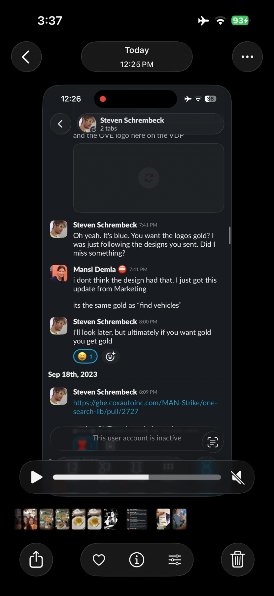

29 contributor posts, with original attribution and comments. Quotations here are reported by contributors. Source JSON retains all metadata and embedded images.
"You get what you tolerate." This was something that Steven said in one of his talks a long time back. I think of this often. Apparently this traces back to a Reader's Digest article in the 70s but it will always be something of Steven that sticks with me
Rodrigo Martinez (Roddy) · story · 2018
Steven was always tinkering with a new idea. This time it was a plant-based food service that he had been working really hard on. At the time my wife was trying to transition to become a vegan and she wanted to give the food service a shot. I signed her signed up for trial meals but the first time around he had some issue with the quality of the food. It had to be perfect! He then gave it another shot (after some unknown iterations) and continued to give those interested trial options... I remember talking to him about the effort and logistics of such an endeavor and even though in the end it didn't work out, I admired his commitment to trying such a new and different thing than what his day-to-day was.
This was on the footer of one of the "Joyfull Foods" emails I got:
"P.S. ANY meal you don't like is free, and if you don't sign up for a second week I'm refunding your entire first week. That's just how I roll."
Mansi Demla · story · February 2021
Getting on a video call was Steven was always so fun. He had all this professional setup going on with his mic, and headphones. Always had a smile, super chill - always asking how can I help.
In August when I was in town and saw him and was telling him that I am leaving COX in December to do something on my own, he said thats awesome, let me know if I can help with anything. He never not offered to help.
I am going miss him.
Jeff Cameron · story · August 2021
I asked Steven a random question about machine learning. Within the hour he'd sent me his own deep learning repos, told me which doors not to knock on, and offered to introduce me to the team that could actually put a model in front of users. We barely knew each other yet. That was just how he was.
Jeff Cameron · words · August 2021
His first reply when I asked for help
okay, i can help
Jeff Cameron · words · September 2021
Before my first demo to the vision team
msg me anytime if i can help test or be a practice audience. want to see you succeed!
Clay Elrod · words · September 2021
I'd like to see this succeed, and I'd like to see your continued employment too! The humor is free!
Clay Elrod · words · October 2021
I asked him to do something, and then I asked if it was easy.
I wouldn't ask Lebron if dunking was easy, either.
Jeff Cameron · story · September 2022
I invited him to my daughter's birthday party because I needed more dad friends. He said he'd ask his four-year-old if he wanted to come. The answer was yes, and a few hours later he asked if his eight-year-old could come too.
Jeff Cameron · words · March 2023
On whether to rebuild another team's design system
dont be heroes. if their thing is legit, just skin / extend it
Jeff Cameron · words · April 2023
On getting out of a meeting gracefully
Telling people you trust them completely is the best way to get out of something but make them feel good
Mansi Demla · words · July 2023
July 13 2023 8:00 PM
“I’ll look later. But ultimately if you want gold, you get gold”

Winnie Widastra · words · August 2023
On the icon styling
If you say it matters, i’ll make it happen..
Comment — Jefe
Wow, now THAT sounds like Steven
Jeff Cameron · story · January 2024
I'd been stuck on a GitHub Actions problem for weeks and told him it was making me feel stupid. At 9pm he sent me a wall of messages about imposter syndrome and how he'd freed himself from it. Then he admitted he had no idea how to fix my problem either. He'd just said he'd figure it out.
Jeff Cameron · words · January 2024
From that same night
Don't be impressed by knowledge. Anyone can acquire that. Take your ability to learn new things very seriously though
Jeff Cameron · words · January 2024
From that same night
Paradoxically I feel more capable the less I'm concerned about looking smart.
Jeff Cameron · words · April 2024
On what the office is for
it's for relationships and really long meetings
Vivian Milender · story · November 2024
Steven was one of the first few people that I met when I started at Cox.
He was always so kind and I enjoyed the way he viewed the world and the work we were doing. In my first few months when I was still trying to figure things out he was always happy to answer questions and he reminded me that maybe I did know more than I thought.
He consistently encouraged myself and other early career folks to explore and ask questions and always made himself available often offering a helping hand.
Jeff Cameron · words · January 2025
When I told him I got the job at Cox Communications
i'm so proud of you man. nothing happens unless you make it happen. ...sometimes after way too long
Jason Antman · keep · 2025
At two of the 2025 Engineering Summits, Steven shared two of the most profoundly different and interesting presentations I've ever seen in a corporate environment.
I showed him my generative UI experiment. He told me exactly which parts were good design and which parts were a waste of time, and then told me to share it. Nobody else pushed me to put it in front of people.
Jeff Cameron · words · June 2026
Reviewing my generative UI prototype
charting sucks man. just wrap rechart or w/e. allow swapping the engine
Jeff Cameron · words · July 2026
Posted in #ai-applied-ai-community
I still believe the best AI features are not obviously AI features. Simply do a better job of presenting what they already want.
swapping UI for a chat interface isn't where i see much opportunity. far better to swap UI for nothing
Jeff Cameron · story · July 2026
He was the first person to join my applied AI channel. Then he cunningly dropped a mention of my generative UI demo, and a day later I had an office hours slot to show it to a lot of people. That demo led to pretty much everything I've done since. When I told him what he'd started, he said: "all i did was point them at what you'd already done ;)"
Jeff Cameron · words · July 2026
On AI productivity gains
we're just running in circles faster
Jeff Cameron · story · August 2026
Our last real conversation. He'd been heads down for months and asked what in AI was worth paying attention to, adding "i think you know me well enough to understand what I think qualifies." I did. I was looking forward to showing him what came next.
I didn't know Steven very well, but his colorful glasses always made me smile when I'd see his profile pic. He seemed crazy bright/smart, and someone who wasn't afraid to speak his truth even if it flew in the face of what everyone else accepted as "normal".
I also really liked his AI comment in the AI channel Jeff posted below. I had read that a while back, and got a chuckle.
I'm deeply saddened I didn't know him better than this, because it sounds like I missed out on a great friendship.
Comment — Jefe
So glad someone mentioned the glasses. I bought an actual truck the color of his glasses because of how cool they are.